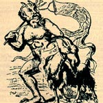

Азазель або Азазелло, негативний персонаж давньої семітської і іудейської міфології, демонічна істота. Згадки про Азазеле можна зустріти в Біблії, в розділі, що описує ритуал "дня спокути". Вважалося, що в цей день необхідно в знак спокути принести дві жертви: одну - Яхве, іншу - Азазель. З цією метою вибирали двох козлів, на яких народ як би перекладав свої гріхи. Те тварина, яке призначалося в жертву демону, відводили в пустелю, де, за переказами, жив Азазель.
В "Книзі Еноха" Азазель зображений в образі демона-спокусника. Згідно з текстом книги, ангел зрадив свого бога і був вигнаний з небес. Спустившись на землю, він навчив чоловіків виготовляти зброю і воювати, а жінок - наносити фарбу на обличчя і витравляти плід.
Своїми діяннями Азазель розгнівав Бога, який наказав архангелу Рафаїлу скувати демона ланцюгами. У день Страшного суду Азазель буде кинутий у вогонь. Іноді цього демона ототожнюють з Азаелем і Узой, які вважалися занепалих ангелів, які мали зв'язки з земними жінками. У деяких легендах ім'ям Азазеля називають Сатану. Азазель - традиційне ім'я біса, яке можна зустріти на сторінках літературних творів.